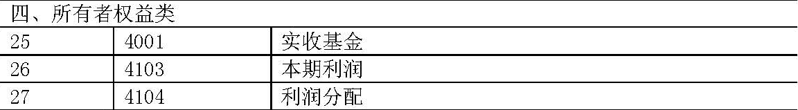

企业会计准则实施问题专家工作组意见第二期
企业会计准则体系（以下简称“新准则”）实施以来，经过各方面的共同努力，较好实现了新旧转换和平稳过渡，市场反映良好。新准则实施已过一个季度，为了深入贯彻新准则，针对近期上市公司、会计师事务所等方面提出的新准则执行中的问题，企业会计准则实施问题专家工作组进行了讨论，达成一致意见，现予发布。
一、问：如何正确地对投资性房地产进行后续计量？
答：企业通常应当采用成本模式对投资性房地产进行后续计量，在符合新准则规定的条件下，才允许采用公允价值模式。同一企业只能采用一种模式对所有投资性房地产进行后续计量，不得同时采用两种计量模式。
采用公允价值计量的投资性房地产，应当同时满足以下条件：
一是投资性房地产所在地有活跃的房地产交易市场。“所在地”一般是指投资性房地产所在的大中型城市的城区。
二是企业能够从活跃的房地产交易市场上取得同类或类似房地产的市场价格及其他相关信息，从而对投资性房地产的公允价值作出合理的估计。“同类或类似的房地产”，对建筑物而言，是指所处地理位置和地理环境相同、性质相同、结构类型相同或相近、新旧程度相同或相近、可使用状况相同或相近的建筑物；对土地使用权而言，是指同一城区、同一位置区域、所处地理环境相同或相近、可使用状况相同或相近的土地。
不具备上述条件的，不得采用公允价值模式。
二、问：如何正确地根据辞退福利计划确认和计量应付职工薪酬？
答：（一）辞退福利是在职工劳动合同尚未到期前，企业决定解除与职工的劳动关系而给予的补偿，或为鼓励职工自愿接受裁减而给予的补偿。辞退福利必须同时满足下列条件，才能确认预计负债：
1.企业已经制定正式的解除劳动关系计划或提出自愿裁减建议，并即将实施。该计划或建议应当包括：拟解除劳动关系或裁减的职工所在部门、职位及数量；根据有关规定按工作类别或职位确定的解除劳动关系或裁减补偿金额；拟解除劳动关系或裁减的时间等。
辞退计划或建议应当经过董事会或类似权力机构的批准，除因付款程序等原因使部分付款推迟至一年以上外，辞退工作一般应当在一年内实施完毕。
2.企业不能单方面撤回解除劳动关系计划或裁减建议。
（二）企业如有实施的职工内部退休计划，虽然职工未与企业解除劳动关系，但由于这部分职工未来不能给企业带来经济利益，企业承诺提供实质上类似于辞退福利的补偿，符合上述辞退福利计划确认预计负债条件的，比照辞退福利处理。企业应当将自职工停止提供服务日至正常退休日的期间拟支付的内退人员工资和缴纳的社会保险费等，确认为应付职工薪酬（辞退福利），不得在职工内退后各期分期确认因支付内退职工工资和为其缴纳社会保险费而产生的义务。
（三）辞退工作在一年内实施完毕、补偿款项超过一年支付的辞退计划（含内退计划），企业应当选择恰当的折现率，以折现后的金额进行计量，计入当期管理费用。折现后的金额与实际应支付的辞退福利的差额，作为未确认融资费用，在以后各期实际支付辞退福利款项时计入财务费用。应付辞退福利款项与其折现后金额相差不大的，也可不予折现。
三、问：如何正确地进行交易性金融资产和可供出售金融资产的分类和会计处理？
答：交易性金融资产主要是指企业为了近期内出售而持有的金融资产。通常情况下，企业以赚取差价为目的从二级市场购入的股票、债券和基金等，应当分类为交易性金融资产。交易性金融资产在活跃的市场上有报价且持有期限较短，应当按照公允价值计量，公允价值变动计入当期损益。
可供出售金融资产主要是指企业没有划分为以公允价值计量且其变动计入当期损益的金融资产、持有至到期投资、贷款和应收款项的金融资产。企业购入的在活跃市场上有报价的股票、债券和基金等，没有划分为以公允价值计量且其变动计入当期损益的金融资产、持有至到期投资等金融资产的，可以归为此类。相对于交易性金融资产而言，可供出售金融资产的持有意图不明确。可供出售金融资产在初始确认时，应当按其公允价值以及交易费用之和入账，公允价值变动计入所有者权益，如可供出售金融资产的公允价值发生非暂时性下跌，应当将原计入所有者权益的公允价值下降形成的累计损失一并转出计入当期损益。可供出售金融资产持有期间实现的利息或现金股利，也应计入当期损益。
企业管理层在取得金融资产时，应当正确地进行分类，不得随意变更。交易性金融资产和可供出售金融资产的分类情况，应当以正式书面文件记录，并在附注中加以说明。
四、问：企业应当采用何种税率计算确认递延所得税资产和递延所得税负债？
答：递延所得税资产和递延所得税负债应当按照预期收回该资产或清偿该负债期间的适用税率计量。适用税率是指按照税法规定，在暂时性差异预计转回期间执行的税率。
《中华人民共和国企业所得税法》已于2007年3月16日通过，自2008年1月1日起实施。企业在进行所得税会计处理时，资产、负债的账面价值与其计税基础之间产生暂时性差异、这些暂时性差异预计在2008年1月1日以后转回的，应当按照新税法规定的适用税率对原已确认的递延所得税资产和递延所得税负债进行重新计量，除原确认时产生于直接计入所有者权益的交易或事项应当调整所有者权益（资本公积）以外，其他情况下产生的递延所得税资产和递延所得税负债的调整金额，应当计入当期所得税费用。
五、问：企业按原制度核算的资本公积执行新准则后应当如何处理？
答：企业按照原制度核算的资本公积，执行新准则后应当分别下列情况进行处理：
（一）原资本公积中的资本溢价或股本溢价，执行新准则后仍应作为资本公积（资本溢价或股本溢价）进行核算。
（二）原资本公积中因被投资单位除净损益外其他所有者权益项目的变动产生的股权投资准备，执行新准则后应当转入新准则下按照权益法核算的长期股权投资产生的资本公积（其他资本公积）。
（三）原资本公积中除上述以外的项目，包括债务重组收益、接受捐赠的非现金资产、关联交易差价、按照权益法核算的长期股权投资因初始投资成本小于应享有被投资单位账面净资产的份额计入资本公积的金额等，执行新准则后应在资本公积（其他资本公积）中单设“原制度资本公积转入”进行核算，该部分金额在执行新准则后，可用于增资、冲减同一控制下企业合并产生的合并差额等。
六、问：售后租回交易中，资产售价与其账面价值之间的差额如何处理？出租人对经营租赁提供激励措施的，如提供免租期、承担承租人的某些费用等，承租人和出租人应当如何处理？
答：（一）售后租回交易中，资产售价与其账面价值之间的差额应当记入“递延收益”科目，售后租回交易认定为融资租赁的，记入“递延收益”的金额应按租赁资产的折旧进度进行分摊，作为折旧费用的调整。
售后租回交易认定为经营租赁的，记入“递延收益”科目的金额，应在租赁期内按照与确认租金费用相一致的方法进行分摊，作为租金费用的调整。但有确凿证据表明售后租回交易是按照公允价值达成的，资产售价与其账面价值之间的差额应当计入当期损益。
（二）出租人对经营租赁提供激励措施的，出租人与承租人应当分别下列情况进行处理：
1.出租人提供免租期的，承租人应将租金总额在不扣除免租期的整个租赁期内，按直线法或其他合理的方法进行分摊，免租期内应当确认租金费用；出租人应将租金总额在不扣除免租期的整个租赁期内，按直线法或其他合理的方法进行分配，免租期内出租人应当确认租金收入。
2.出租人承担了承租人某些费用的，出租人应将该费用自租金收入总额中扣除，按扣除后的租金收入余额在租赁期内进行分配；承租人应将该费用从租金费用总额中扣除，按扣除后的租金费用余额在租赁期内进行分摊。
七、问：企业在编制合并财务报表时，因抵销未实现内部销售损益在合并财务报表中产生的暂时性差异是否应当确认递延所得税？母公司对于纳入合并范围的子公司的未确认投资损失，执行新准则后在合并财务报表中如何列报？
答：（一）企业在编制合并财务报表时，因抵销未实现内部销售损益导致合并资产负债表中资产、负债的账面价值与其在纳入合并范围的企业按照适用税法规定确定的计税基础之间产生暂时性差异的，在合并资产负债表中应当确认递延所得税资产或递延所得税负债，同时调整合并利润表中的所得税费用，但与直接计入所有者权益的交易或事项及企业合并相关的递延所得税除外。
（二）执行新准则后，母公司对于纳入合并范围的子公司的未确认投资损失，在合并资产负债表中应当冲减未分配利润，不再单独作为“未确认的投资损失”项目列报。
企业在编制执行新准则后的首份报表时，对于比较合并财务报表中的“未确认的投资损失”项目金额，应当按照企业会计准则的列报要求进行调整，相应冲减合并资产负债表中的“未分配利润”项目和合并利润表中的“净利润”及“归属于母公司所有者的净利润”项目。
八、问：2007年7月1日起执行新准则的证券投资基金，其持有的资产、负债和所有者权益以及实现的收入、发生的费用应当如何进行会计处理和编制财务报告？如何实现新旧转换？
答：证券投资基金（以下简称基金）属于独立的会计主体，其资产、负债、所有者权益（基金净值）、收入和费用等，应当按照新准则的规定进行确认、计量和报告。
（一）基金持有的金融资产和承担的金融负债，通常分类为以公允价值计量且其变动计入当期损益的金融资产和金融负债，应当采用公允价值进行初始和后续计量，公允价值的变动以及取得时发生的相关交易费用计入当期损益。
基金持有的除上述划分为以公允价值计量且其变动计入当期损益的金融资产和金融负债之外的其他金融资产或金融负债，包括买入返售金融资产和卖出回购金融资产款等，应当按照《企业会计准则第22号——金融工具确认和计量》等相关规定处理。
基金涉及金融资产转移和套期保值的，应当分别执行《企业会计准则第23号——金融资产转移》和《企业会计准则第24号——套期保值》。
（二）基金的所有者权益（基金净值），是指基金的资产减去负债后的余额，包括实收基金、未分配利润等。在基金募集、申购、转换转入、基金红利再投资等时，应当增加相应的实收基金；在基金赎回或转换转出等时，应当减少相应的实收基金。基金在期末应当根据当期实现的净利润（或亏损）增加（或减少）未分配利润；根据利润分配数，减少未分配利润。
（三）基金应当按照新准则的规定设置会计科目，并按照所附的报表格式定期编制财务报告。基金财务报告应当包括：资产负债表、利润表、所有者权益（基金净值）变动表、附注和其他应当在财务报告中披露的相关信息和资料。基金可以根据实际需要在不违反企业会计准则中确认、计量和报告规定的前提下自行设置相关会计科目。附注的编制应当遵循《企业会计准则第30号——财务报表列报》和《企业会计准则第37号——金融工具列报》及其应用指南等规定。
（四）基金在新旧转换时，应当按照下列要求进行处理：
在首次执行日，基金应当对所有资产、负债和所有者权益项目按照新准则进行重新分类、确认和计量，编制期初资产负债表。
因首次执行新准则而导致会计政策发生变更的，应当采用追溯调整法进行处理，根据会计政策变更的累积影响数调整列报前期最早期初留存收益（未分配利润），其他相关项目的期初金额和列报前期的比较数据也应一并调整。确定会计政策变更对列报前期影响数不切实可行的，应当从可追溯调整的最早期间期初开始应用变更后的会计政策。在首次执行日确定会计政策变更对以前各期累积影响数不切实可行的，应当采用未来适用法处理。
（五）其他类似基金或类似于证券投资基金运作方式的产品（除企业年金基金），比照本意见进行会计处理。
附录：
一、基金会计科目表

二、基金资产负债表、利润表、所有者权益（基金净值）变动表格式
 基金份额净值 元，基金份额总额 份。
基金份额净值 元，基金份额总额 份。
2007年4月30日